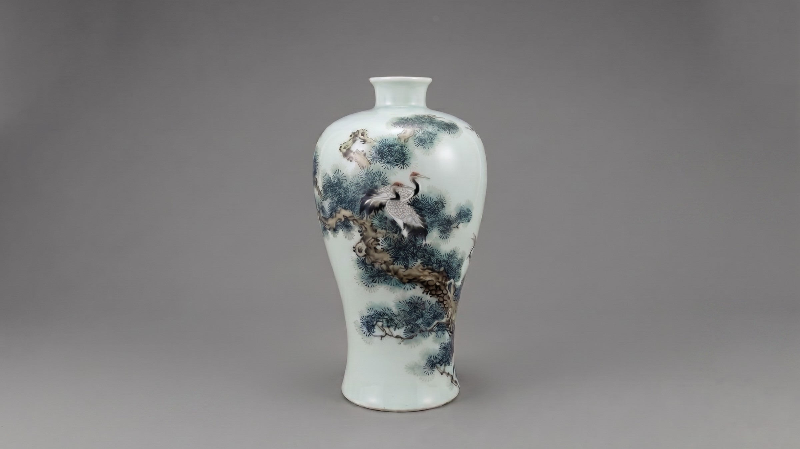
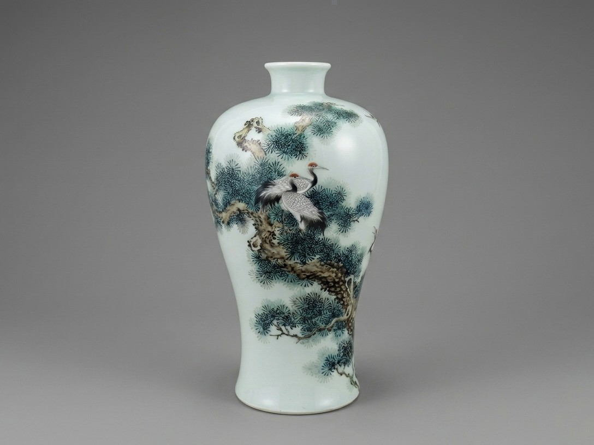
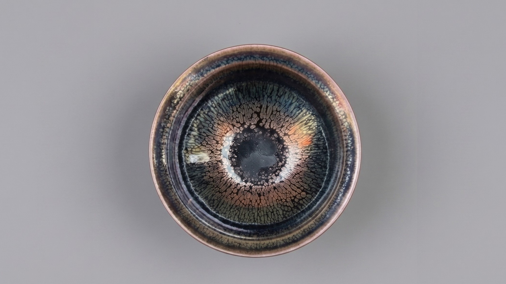
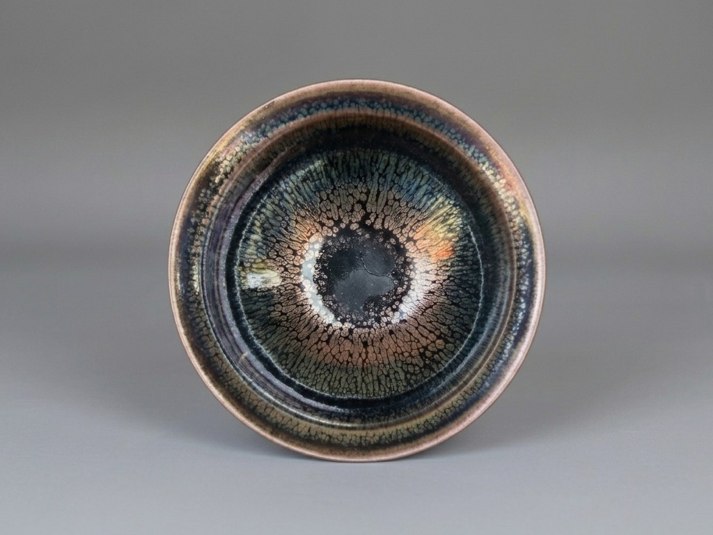
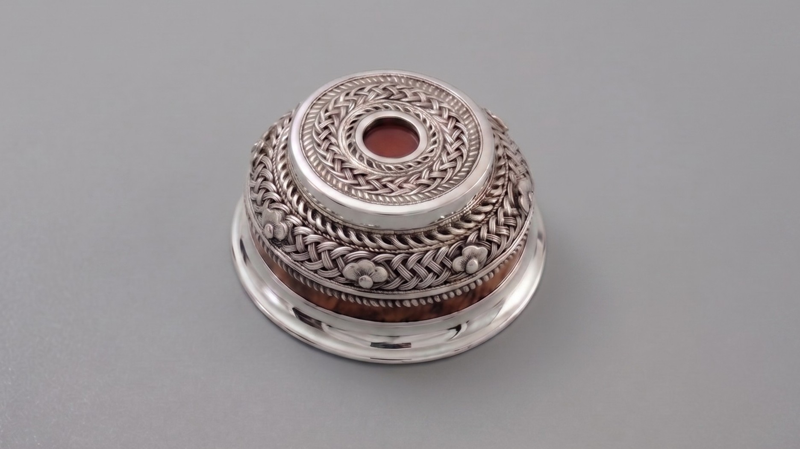
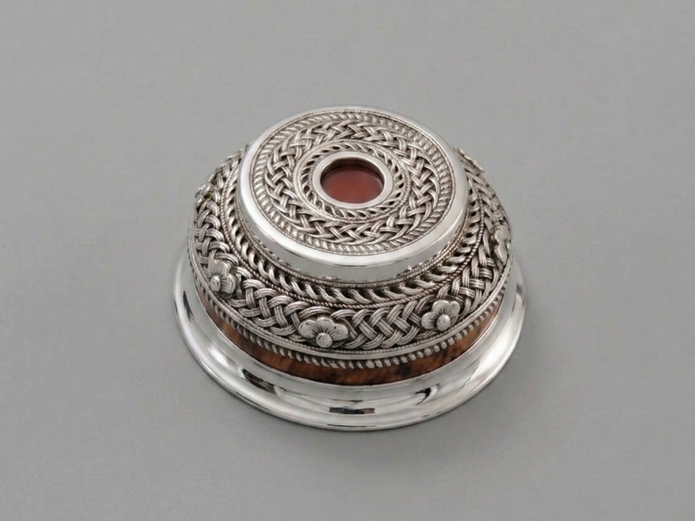

Chinese ceramics and Mongolian silver, individually curated.


Chinese Porcelain
Jingdezhen porcelain has been prized both within China and around the world since its invention. Impossibly thin and lustrous, awestruck Europeans named these artworks porcellana after their jewel-like similarity to fine white shells. Embellished with cobalt blue or multicolour enamels, or glazed in lustrous monochrome oxblood red or teadust green, finest Jingdezhen porcelains remain the pinnacle of international ceramic arts.


Chinese Stoneware
Thousands of years older than porcelain, Chinese stoneware traditions combine ancient artistic practices with a timelessness that blends seamlessly with modern aesthetics. Black-glazed Jian ware was developed in Jianyang for Chinese whipped tea, the ancestor of matcha, and Jian ware bowls continue to be treasured as fine matcha bowls in Japan. Even older are green-tinged celadon wares, praised across Asia for their jadelike colours and finish, which reached their apogee in China at the kilns of Longquan.


Mongolian Silver
Skillfully crafted art objects and ornaments in precious metals have been an elite genre of art on the Mongolian Plateau for thousands of years. The elegant filigree of Dariganga silver evokes the richness of the lush grasslands of the Dariganga homeland, while the vigour and brawn of Noyon-Sevrei silver encapsulates the stark beauty of the Gobi.